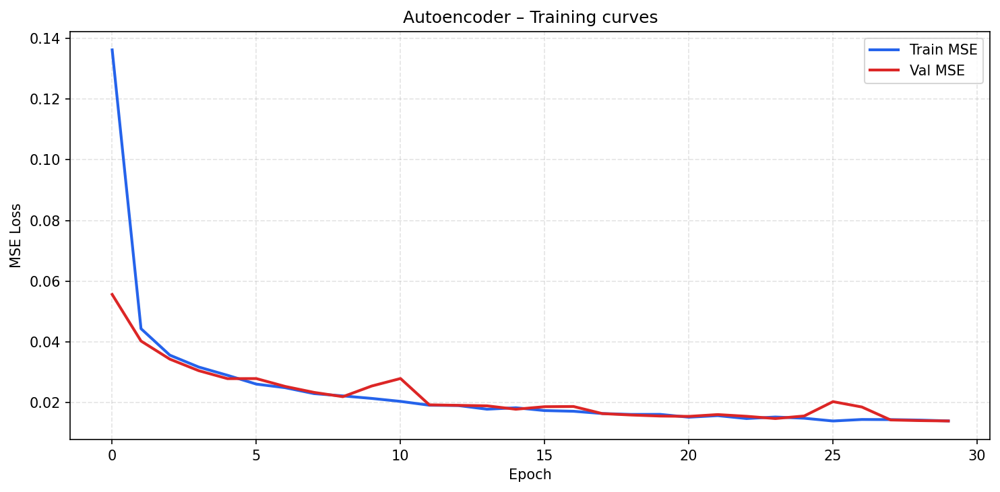
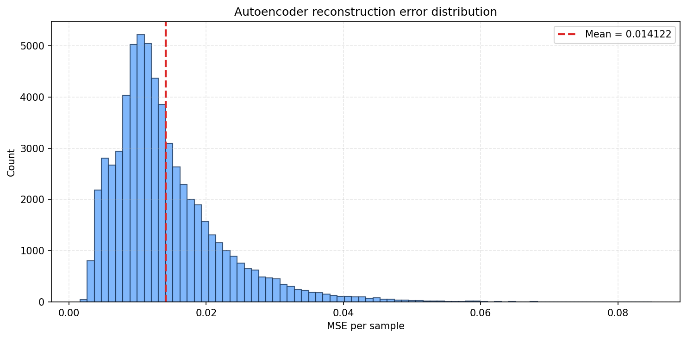
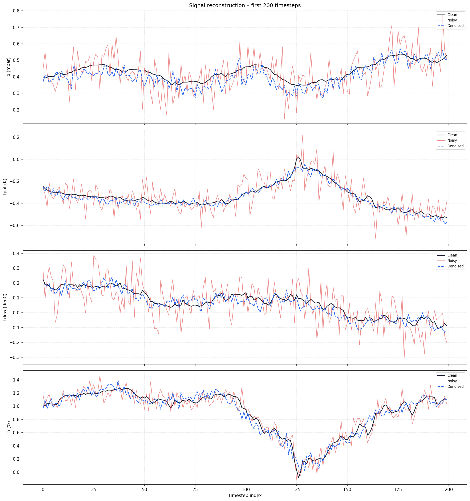
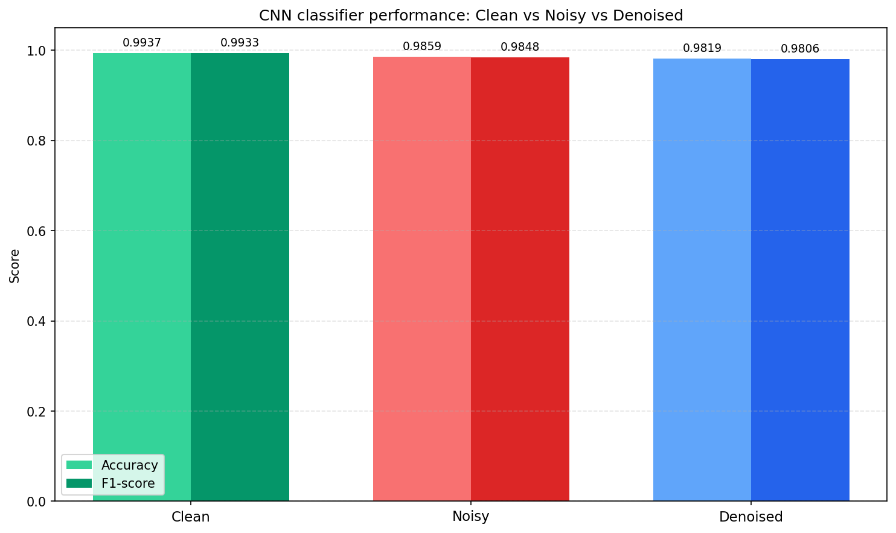
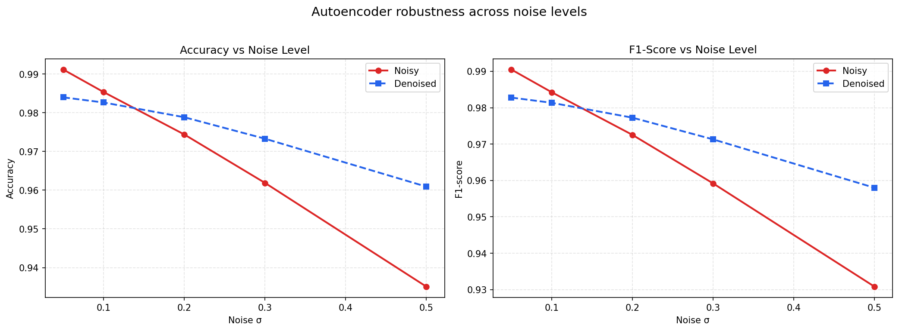
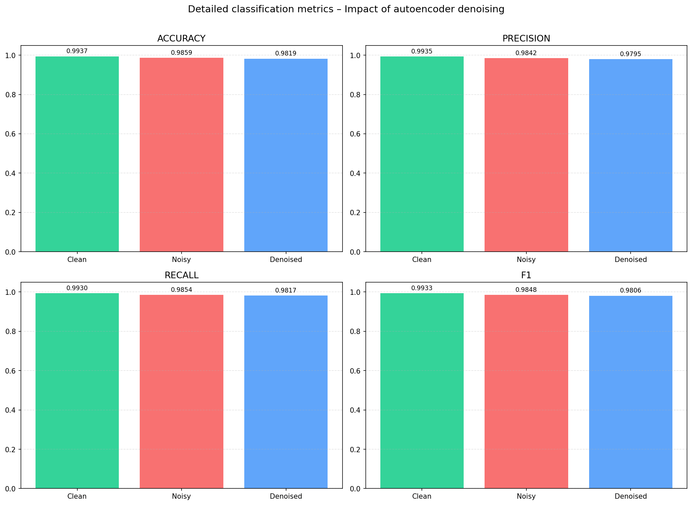

Assignment 5: Denoising Autoencoder
Training a fully-connected autoencoder on clean sensor windows, applying it to denoise artificially corrupted signals, and measuring the impact on the CNN classifier from Assignment 4.
MSE. Optimizer: Adam.val_loss, patience = 5.Total trainable parameters: 402,864 (1.54 MB)

Autoencoder converges within ~15 epochs. Train and validation loss track closely — no overfitting.

Per-sample MSE distribution on denoised test data. The tight distribution shows consistent reconstruction quality across samples.

Four sensor features over 200 timesteps. The autoencoder (blue dashed) closely follows the clean signal (black), successfully filtering out the Gaussian noise (red).

At σ = 0.1, all three variants remain >98%. The CNN is already highly robust to small noise.
| Variant | Accuracy | F1 |
|---|---|---|
| Clean | 0.9937 | 0.9933 |
| Noisy | 0.9859 | 0.9848 |
| Denoised | 0.9819 | 0.9806 |
At low noise (σ = 0.1), the autoencoder's own reconstruction error (MSE ≈ 0.014) slightly exceeds the noise damage. However, the real value appears at higher noise levels…
Testing at σ ∈ {0.05, 0.10, 0.20, 0.30, 0.50} reveals the autoencoder's crossover point.
| σ | Noisy Acc | Denoised Acc | Δ Acc |
|---|---|---|---|
| 0.05 | 0.9912 | 0.9840 | -0.72% |
| 0.10 | 0.9853 | 0.9826 | -0.27% |
| 0.20 | 0.9744 | 0.9788 | +0.44% |
| 0.30 | 0.9619 | 0.9733 | +1.14% |
| 0.50 | 0.9351 | 0.9609 | +2.58% |
At σ ≥ 0.2, denoising consistently recovers classification quality. At σ = 0.5, the autoencoder recovers +2.6% accuracy and +2.7% F1.

The red (noisy) line drops steeply while the blue (denoised) line degrades much more gracefully — demonstrating increasing autoencoder value at higher corruption.

All four classification metrics (accuracy, precision, recall, F1) across clean, noisy, and denoised test sets at the primary noise level σ = 0.1.
autoencoder.h5 — saved autoencodercnn_classifier.h5 — CNN from Assignment 4results_summary.jsonAutoencoders are a valuable preprocessing step for noisy sensor data. Their effectiveness scales with the severity of corruption — making them ideal as a safety net for real-world deployment where sensor reliability cannot be guaranteed.